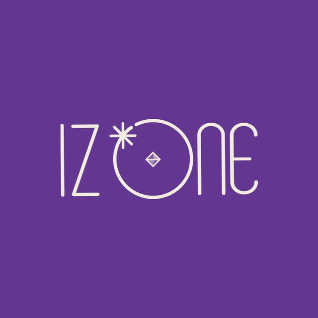

yichen.com
2021.04
About
姜惠元
清 纯 门 面
废 物 美 人
8th
光
北
日语谐音
姜惠元（강혜원/Kang Hye Won），1999年7月5日出生于韩国，韩国流行乐女歌手 ，女子演唱组合IZ*ONE成员。
2018年6月，参加韩国Mnet电视台的选秀节目《PRODUCE 48》，最终在节目中获得第8名，成为韩日女子限定组合IZ*ONE的成员
10月25日，随组合推出首部团体综艺节目《IZ*ONE CHU》；29日，随组合发行首张迷你专辑《COLOR*IZ》，并在首尔松坡区奥林匹克公园奥林匹克大厅举行出道Showcase，正式出道。11月1日，随组合获得2018Mnet亚洲音乐大奖最佳女子新人奖；8日，随组合凭借歌曲《La Vie en Rose》在Mnet音乐榜单节目《M! Countdown》中获得了出道后的首个韩国音乐节目一位 。2019年1月，在日本举行出道Showcase 。并凭借超过17万张的首日销量夺得了公信榜单曲销量冠军 。
姜惠元出道前生活在韩国庆尚南道梁山市，高中一年级时转入首尔翰林艺术高中演艺系，是家中长女，有一个弟弟。性格搞怪讨喜，虽是美女但是是吃货一枚，宅男属性，善良大姐。
清纯----------qingchun
姜酱----------jiangjiang
光北----------guangbei
TheIZ*ONE
性格圈粉的
姜惠元
姜惠元在出道之前，是个完完全全的素人，没有接受过任何的唱跳训练，原公司是个食品公司。没有人告诉她偶像应该做什么，她参加选秀节目也只是为了公司应酬能有一份收入。没想到的是，姜惠元凭借着自己的清纯面貌和善良讨喜的性格，收获一大批粉丝。
尽管在节目中，光北的实力十分差劲，甚至在从来没有唱过rap的情况下，担起组合的重担，挑战了分曲中的rap部分。果不其然，唱的效果很差，但也因此吸了最大的一波粉，并且造就了“地狱清纯”的称号，也让人们看到了姜惠元善良的那一面，为姜惠元的出道埋下了伏笔。
出道夜，姜惠元凭借着强大的路人好感以及庞大的粉丝基础，成功在98名女生中以第八的名次出道。出道后，因为实力不足，再加上眼睛高度近视1000度，没有办法很好地完成大份part的唱跳，一直在组合中镶边。但也因其努力不放弃，不划水，不断进步的状态吸引大批粉丝，也让人们看到了姜惠元的闪光点，发现了养成系爱豆的乐趣。
由于iz*one是限定团，只有两年的合约，已于2021年3月底举办了解散演唱会，姜惠元也在最后一场演唱会上展现出了最好的表现，与出道之期相比，让人感慨其进步魅力。
Ayaya姜惠元（清纯光北）
 谢谢你用你的有趣和酷的个性让大家开心......... 彩燕
终于敢唱出来了，做的好..................... cheetah
purple kiss是我精心准备的舞台............... 姜惠元
IZ*ONE
姜惠元（강혜원）
yichen yichen yichen
BOOM BA YA
我会努力成长，做给大家看。让大家能看到我的进步，跟上队友的步伐进度，不辜负每一位粉丝对我的喜爱与期待
yichen.com